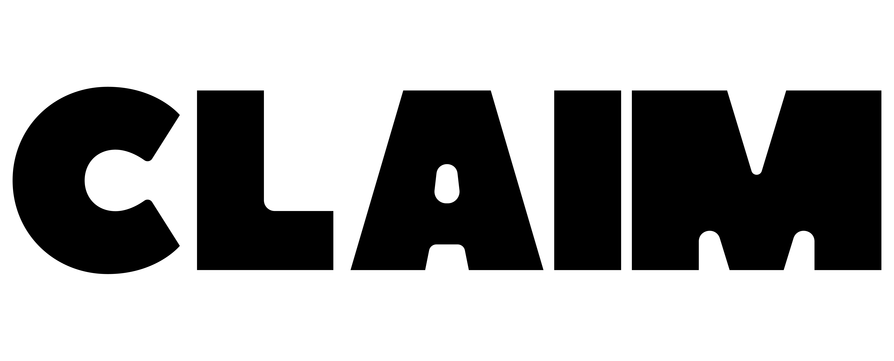

Version d’essaiAperçu local · cette page n’est pas encore publiée.
LE MONDE EST À TOI
Ta photo.
Dans le monde réel.
Place une photo autour de toi.
Explore Claim, simplement.
Claim 0.2.25 · Android · 106,4 Mo
Installer ou mettre à jourSans câble. Sans mode débogage.
Android te demande de confirmer l’installation.
La première fois
- Télécharge Claim
Ouvre le fichier téléchargé depuis ton navigateur ou « Téléchargements ».
- Confirme avec Android
Si demandé, autorise l’installation depuis ce navigateur, puis touche « Installer ». Tu peux retirer cette autorisation ensuite.
- Prépare ton expérience
Ouvre Claim. L’app vérifie les capacités de ton téléphone et explique les composants nécessaires avant de te proposer la caméra.
Déjà installé ?
Utilise le même bouton, puis confirme « Mettre à jour » dans Android. Garde l’ancienne app installée : la mise à jour est conçue pour conserver tes photos et tes données.
Si Android refuse, conserve l’app et son message d’erreur. Ne la désinstalle pas pour contourner le problème.
Voir les nouveautés de cette version →Compatibilité et informations utiles
Ce fichier est destiné aux téléphones Android compatibles, notamment sous Android 9 et versions plus récentes. Le minimum logiciel de cet APK est Android 7.1, avec processeur ARM et graphismes OpenGL ES 3.0. L’installation et la qualité des fonctions AR sont deux choses différentes : Claim choisit les fonctions disponibles après son diagnostic.
Le comportement n’a pas été vérifié sur tous les modèles. Cette version est un prototype : la stabilité, l’occlusion, le retour au même lieu et le partage continuent d’être testés. L’APK Android ne fonctionne pas sur iPhone.
Cette page ne contient ni suivi publicitaire ni accès à tes photos. GitHub héberge le téléchargement et peut conserver des journaux techniques de connexion. Tes photos ne sont pas publiées par une installation ou une mise à jour.
Empreinte du fichier (SHA-256)e94b7694260ee1fda983e3cc2970575a5af2842b497be36c38ce57fd5e051174